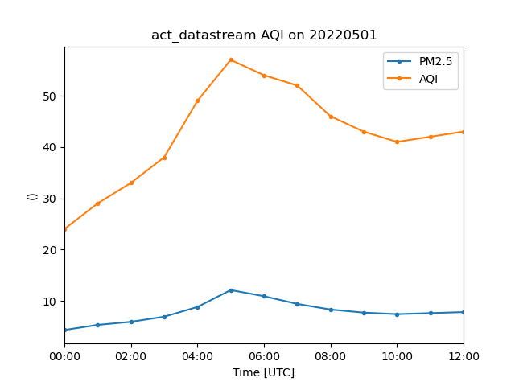

Note
Click here to download the full example code
Airnow Data¶
This example shows the different ways to pull air quality information from EPA’s AirNow API for a station near to SGP
<xarray.Dataset>
Dimensions: (index: 8)
Coordinates:
* index (index) int64 0 1 2 3 4 5 6 7
Data variables:
DateIssue (index) object '2022-04-29 ' '2022-04-29 ' ... '2022-04-29 '
DateForecast (index) object '2022-05-01 ' '2022-05-01 ' ... '2022-05-04 '
ReportingArea (index) object 'Oklahoma City' ... 'Oklahoma City'
StateCode (index) object 'OK' 'OK' 'OK' 'OK' 'OK' 'OK' 'OK' 'OK'
Latitude (index) float64 35.47 35.47 35.47 ... 35.47 35.47 35.47
Longitude (index) float64 -97.51 -97.51 -97.51 ... -97.51 -97.51
ParameterName (index) object 'O3' 'PM2.5' 'O3' ... 'PM2.5' 'O3' 'PM2.5'
AQI (index) int64 50 40 30 20 50 30 30 20
CategoryNumber (index) int64 1 1 1 1 1 1 1 1
CategoryName (index) object 'Good' 'Good' 'Good' ... 'Good' 'Good' 'Good'
ActionDay (index) bool False False False False False False False False
Discussion (index) object 'Southerly winds today will bring moisture...
<xarray.Dataset>
Dimensions: (index: 3)
Coordinates:
* index (index) int64 0 1 2
Data variables:
DateObserved (index) object '2022-05-01 ' '2022-05-01 ' '2022-05-01 '
HourObserved (index) int64 0 0 0
LocalTimeZone (index) object 'CST' 'CST' 'CST'
ReportingArea (index) object 'Oklahoma City' ... 'Oklahoma City'
StateCode (index) object 'OK' 'OK' 'OK'
Latitude (index) float64 35.47 35.47 35.47
Longitude (index) float64 -97.51 -97.51 -97.51
ParameterName (index) object 'OZONE' 'PM2.5' 'PM10'
AQI (index) int64 51 30 21
CategoryNumber (index) int64 2 1 1
CategoryName (index) object 'Moderate' 'Good' 'Good'
<xarray.Dataset>
Dimensions: (time: 13)
Coordinates:
* time (time) datetime64[ns] 2022-05-01 ... 2022-05-01T12:00:00
sites <U10 'Ponca City'
Data variables:
latitude float64 36.7
longitude float64 -97.08
aqs_id int64 400710604
PM2.5 (time) float64 4.3 5.3 5.9 6.9 8.8 ... 7.7 7.4 7.6 7.8
AQI (time) float64 18.0 22.0 25.0 29.0 ... 31.0 32.0 33.0
category (time) float64 1.0 1.0 1.0 1.0 1.0 ... 1.0 1.0 1.0 1.0
raw_concentration (time) float64 5.1 6.3 6.5 7.9 10.8 ... 7.1 7.1 7.8 8.1
/home/runner/work/ACT/ACT/act/plotting/plot.py:81: UserWarning: Could not discern datastreamname and dict or tuple were not provided. Using defaultname of act_datastream!
warnings.warn(
import os
import matplotlib.pyplot as plt
import act
# You need an account and token from https://docs.airnowapi.org/ first
token = os.getenv('AIRNOW_API')
if token is not None and len(token) > 0:
# This first example will get the forcasted values for the date passed
# at stations within 100 miles of the Zipcode. Can also use latlon instead as
# results = act.discovery.get_airnow_forecast(token, '2022-05-01', distance=100,
# latlon=[41.958, -88.12])
# If the username and token are not set, use the existing sample file
results = act.discovery.get_airnow_forecast(token, '2022-05-01', zipcode=74630, distance=100)
# The results show a dataset with air quality information from Oklahoma City
# The data is not indexed by time and just a rudimentary xarray object from
# converted from a pandas DataFrame. Note that the AirNow API labels the data
# returned as AQI.
print(results)
# This call gives the daily average for Ozone, PM2.5 and PM10
results = act.discovery.get_airnow_obs(token, date='2022-05-01', zipcode=74630, distance=100)
print(results)
# This call will get all the station data for a time period within
# the bounding box provided. This will return the object with time
# as a coordinate and can be used with ACT Plotting to plot after
# squeezing the dimensions. It can be a 2D time series
lat_lon = '-98.172,35.879,-96.76,37.069'
results = act.discovery.get_airnow_bounded_obs(
token, '2022-05-01T00', '2022-05-01T12', lat_lon, 'OZONE,PM25', data_type='B'
)
# Reduce to 1D timeseries
results = results.squeeze(dim='sites', drop=False)
print(results)
# Plot out data but note that Ozone was not return in the results
display = act.plotting.TimeSeriesDisplay(results)
display.plot('PM2.5', label='PM2.5')
display.plot('AQI', label='AQI')
plt.legend()
plt.show()
Total running time of the script: ( 0 minutes 16.135 seconds)